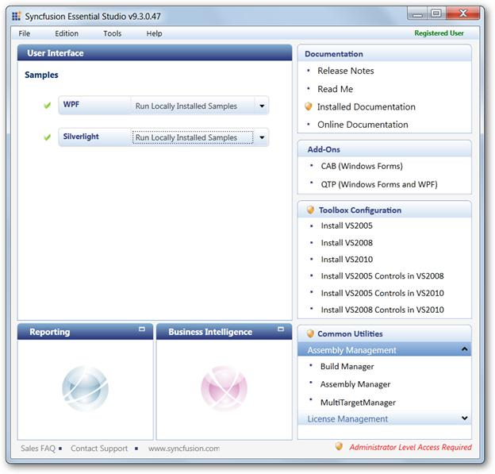
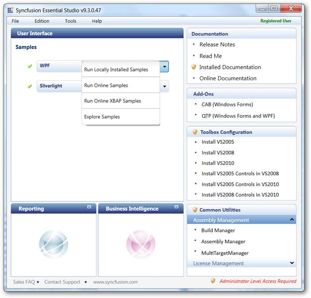
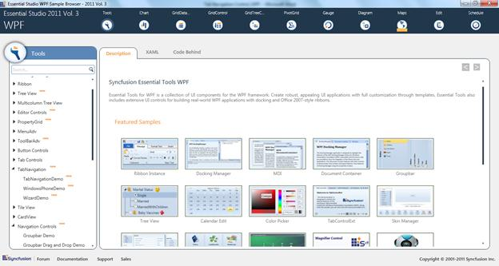

To view samples:
1. Click Start-->All Programs-->Syncfusion-->Essential Studio <version number> -->Dashboard.
The Essential Studio Enterprise Edition window is displayed.

Figure 1030: Essential Studio Dashboard
The User Interface edition panel is displayed by default.
2. Select WPF from the samples listed. The following options will be displayed. You can view the samples in the following three ways:
· Run Locally Installed Samples-View the locally installed Tools samples for WPF using the sample browser
· Run Online Samples-View the online samples for WPF
· Run Online XBAP Samples – View the online XBAP samples for WPF
· Explore Samples-Locate the WPF samples on the disk

Figure 1031: Essential Studio DashboardDisplaying options
3. Click Run Locally Installed Samples. The WPF Sample Browser displays.

Figure 1032: Essential Studio Tools Dashboard
4. On the left pane, go to Tab Navigation ->Tab Navigation Demo.